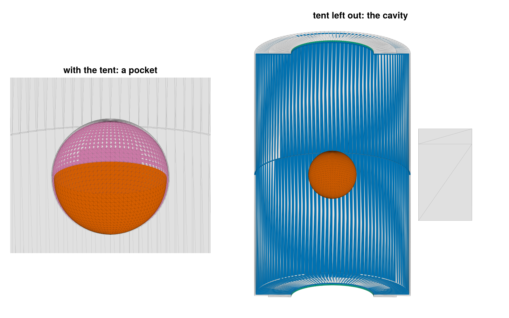
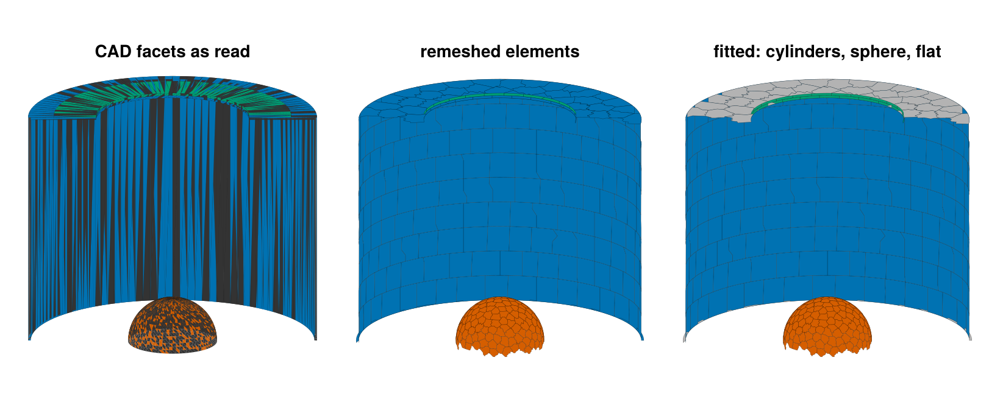
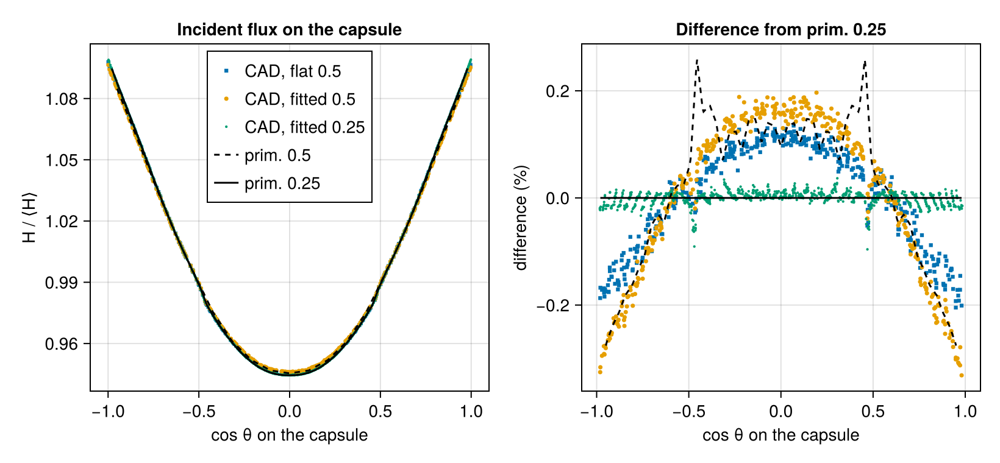

Radiation in an imported CAD hohlraum
Target designers draw hohlraums in CAD, and the assembly that reaches a view-factor code is a set of tessellated solids: two hohlraum halves with thick walls, entrance hole washers, the capsule, the tent films that hold it, and the structure that mounts the target. As a radiation model it has three problems. Every part is a closed solid, so most of its surface (outer walls, back faces, the mount) never exchanges radiation with the cavity, while view factors cost the square of the element count. The tessellation is made for drawing, not for radiosity: a cylindrical wall comes as strips running its full length, flat rings as radial slivers, with the facets' windings (which side is the front) mixed. And the curved walls are polygons: flat facets standing in for a cylinder or a sphere misstate the exchange between nearby elements (see the Integrating sphere tutorial).
This tutorial builds such an assembly, with the flaws of real exports, writes it as a multi-solid STL file and takes it to a radiation calculation: orient_mesh repairs the windings, enclosure keeps the surfaces that bound the cavity around the capsule, remesh_mesh divides them into compact elements, fit_surfaces and curved_components find the cylinders and spheres and attach their exact surfaces; cad_target then takes these steps in one call. The radiosity solution is checked against the same hohlraum built from Briareus's primitives and against closed forms.
using Briareus
using CairoMakie
using LinearAlgebra
using Printf
using Random
using Briareus: Vec3 # Makie exports a Vec3 too
CairoMakie.activate!(type = "png", px_per_unit = 2)
include(joinpath(pkgdir(Briareus), "docs", "literate", "_plotting.jl")) # figure helperscutaway! (generic function with 1 method)A CAD-like assembly
The hohlraum has a cavity of radius 2.875 mm and length 9.4 mm with 1.55 mm entrance holes (LEHs), as the primitive hohlraum has by default. In CAD it is two halves with 50 µm walls that meet at the waist across a 20 µm gap; each end wall is 50 µm thick, and a 50 µm washer on it carries the LEH, so the holes are 0.1 mm deep bores. The capsule has a radius of 0.9 mm, and the tent is a 15 µm film wrapped around it, 30 µm off its surface, made of two cups that meet at the equator. A mounting block sits beside the waist. All lengths are in millimeters.
R, Rout, Rleh, h = 2.875, 2.925, 1.55, 4.7 # cavity and outer radius, LEH radius, half length
te, tw, Rw = 0.05, 0.05, 2.4 # end wall and washer thickness, washer radius
g2 = 0.01 # half the waist gap
rc, ri, ro = 0.9, 0.93, 0.945 # capsule, tent film inside and outside
zL = h + te + tw # the outer end of the LEH boresEvery part is a solid of revolution, tessellated the way CAD exports cylinders: one facet pair per azimuthal step and profile segment, whatever the segment's length. A wall segment becomes strips running its full length, a flat ring radial slivers, and a sphere latitude bands with fans of slivers at the poles. revolve turns a closed profile of $(r, z)$ points into such facets; the bottom half is the top half mirrored.
pt(r, φ, z) = Vec3(r * cos(φ), r * sin(φ), z)
function revolve(profile; nphi)
facets = NTuple{3,Vec3}[]
φs = range(0, 2π; length = nphi + 1)
for (i, (r1, z1)) in enumerate(profile)
r2, z2 = profile[mod1(i + 1, length(profile))]
r1 == r2 == 0 && continue # along the axis
for j in 1:nphi
a, b = pt(r1, φs[j], z1), pt(r1, φs[j+1], z1)
c, d = pt(r2, φs[j+1], z2), pt(r2, φs[j], z2)
r1 == 0 ? push!(facets, (a, c, d)) : # fans at the poles
r2 == 0 ? push!(facets, (a, b, c)) : push!(facets, (a, b, c), (a, c, d))
end
end
return facets
end
arc(r, a, b, n) = [(r * sinpi(x), r * cospi(x)) for x in range(a, b; length = n + 1)] # polar angles in units of π
mirror(facets) = [map(v -> v .* Vec3(1, 1, -1), f) for f in facets]
function block(lo, hi)
c = [Vec3(x, y, z) for x in (lo[1], hi[1]), y in (lo[2], hi[2]), z in (lo[3], hi[3])]
quads = ((1, 3, 7, 5), (2, 6, 8, 4), (1, 5, 6, 2), (3, 4, 8, 7), (1, 2, 4, 3), (5, 7, 8, 6))
return [f for q in quads for f in ((c[q[1]], c[q[2]], c[q[3]]), (c[q[1]], c[q[3]], c[q[4]]))]
end
half = revolve([(R, g2), (Rout, g2), (Rout, h + te), (Rleh, h + te), (Rleh, h), (R, h)]; nphi = 120)
washer = revolve([(Rleh, h + te), (Rw, h + te), (Rw, zL), (Rleh, zL)]; nphi = 120)
capsule = revolve(arc(rc, 0, 1, 40); nphi = 80)
cup = revolve([arc(ro, 0, 1 / 2, 20); reverse(arc(ri, 0, 1 / 2, 20))]; nphi = 80)
assembly = ["hohlraum_top" => half, "hohlraum_bottom" => mirror(half),
"washer_top" => washer, "washer_bottom" => mirror(washer),
"capsule" => capsule, "tent_top" => cup, "tent_bottom" => mirror(cup),
"mount" => block((Rout + 0.3, -1.0, -1.5), (Rout + 2.3, 1.0, 1.5))]CAD faces are stitched with either orientation: here 30% of the facets, chosen at random, are wound the other way, and the facets are shuffled. write_stl with binary = false writes one solid … endsolid block per part, the way CAD exporters write assemblies, and read_stl_solids reads them back as named meshes. STL lists every facet with its own three vertices, so the file does not record which facets are neighbors.
rng = Xoshiro(2026)
function cad_mesh(facets)
m = Briareus.Mesh()
for (a, b, c) in shuffle(rng, facets)
add_polygon!(m, rand(rng) < 0.3 ? [a, c, b] : [a, b, c])
end
return m
end
path = joinpath(mktempdir(), "assembly.stl")
write_stl(path, [name => cad_mesh(f) for (name, f) in assembly]; binary = false)
solids = read_stl_solids(path)8-element Vector{Pair{String, Mesh}}:
"hohlraum_top" => Mesh(1440 patches, 1440 triangles)
"hohlraum_bottom" => Mesh(1440 patches, 1440 triangles)
"washer_top" => Mesh(960 patches, 960 triangles)
"washer_bottom" => Mesh(960 patches, 960 triangles)
"capsule" => Mesh(6240 patches, 6240 triangles)
"tent_top" => Mesh(6400 patches, 6400 triangles)
"tent_bottom" => Mesh(6400 patches, 6400 triangles)
"mount" => Mesh(12 patches, 12 triangles)The facets' shapes, as the longest edge over the height across it (1.15 for an equilateral triangle), and the solids' signed volumes, $\sum a\cdot(b\times c)/6$ over the facets, which is the material's volume for a closed solid wound to face out of it, before and after orient_mesh:
function aspect(m, k)
a, b, c = (m.vertices[i] for i in m.triangles[k])
L = maximum(norm, (b - a, c - b, a - c))
return L^2 / norm(cross(b - a, c - a))
end
signed_volume(m) = sum(dot(m.vertices[a], cross(m.vertices[b], m.vertices[c])) for (a, b, c) in m.triangles) / 6
volume(name) = name == "capsule" ? 4π / 3 * rc^3 : startswith(name, "hohlraum") ?
π * (Rout^2 - R^2) * (h - g2) + π * (Rout^2 - Rleh^2) * te :
startswith(name, "washer") ? π * (Rw^2 - Rleh^2) * tw :
startswith(name, "tent") ? 2π / 3 * (ro^3 - ri^3) : 2 * 2 * 3
oriented = [name => orient_mesh(m) for (name, m) in solids]
println("part facets aspect: median max volume (mm³): as read oriented exact")
for ((name, m), (_, o)) in zip(solids, oriented)
as = sort([aspect(m, k) for k in eachindex(m.triangles)])
@printf("%-16s %7d %13.1f %7.0f %19.4f %9.4f %8.4f\n", name, length(m.triangles), as[end ÷ 2],
as[end], signed_volume(m), signed_volume(o), volume(name))
endpart facets aspect: median max volume (mm³): as read oriented exact
hohlraum_top 1440 9.0 31 9.1329 5.2370 5.2394
hohlraum_bottom 1440 9.0 31 -6.5550 5.2370 5.2394
washer_top 960 2.9 11 -1.2464 0.5272 0.5274
washer_bottom 960 2.9 11 1.6148 0.5272 0.5274
capsule 6240 2.1 13 -1.2071 3.0458 3.0536
tent_top 6400 2.1 13 -0.0509 0.0826 0.0828
tent_bottom 6400 2.1 13 0.0405 0.0826 0.0828
mount 12 2.2 2 14.9000 12.0000 12.0000The wall strips are 4.7 mm long and 0.15 mm wide. As read, the signed volumes are meaningless. orient_mesh welds vertices by position, makes the windings consistent across every shared edge, and turns each closed surface to face out of the volume it encloses. Every part here is closed, and its oriented volume is the exact volume of the solid less the faceting (a 120-gon has $1 - (2\pi/120)^2/6$, 0.05% less area than its circle). A hohlraum half's inner wall is the same surface as its outer wall, so it now faces the axis: the cavity side.
Each closed surface is oriented as a whole, so a hollow part whose inner surface is a separate closed surface (a shell modeled with its gas volume) gets that inner surface facing into the material as well. None of these parts has one; the tent cups and the washers are each a single closed surface.
The cavity
The radiation problem is the free space around the capsule. enclosure finds the element sides that bound it: each element casts 64 diffuse rays and gathers the flux that an isotropic source at the point would put on it, directly and after re-emission, and the elements that receive at least 5% of the cavity's typical flux are kept. The point is the capsule center; lines of sight from it pass through surfaces seen from behind, such as the capsule's own.
part_target(ps) = Target([Component(Symbol(n), m, n == "capsule" ? ablator() : gold()) for (n, m) in ps])
with_tent = enclosure(part_target(oriented))Enclosure of (0.0, 0.0, 0.0): 12480 of 23852 elements (12480 selected), 3 of 8 components
escape 0.0000 of the rays from the point; open area 0 mm², leak area 0 mm² (returning 0 mm²), back sides 0 mm² (64 rays per element)
hohlraum_top 0 / 1440 elements area 0 / 210.9 mm²
hohlraum_bottom 0 / 1440 elements area 0 / 210.9 mm²
washer_top 0 / 960 elements area 0 / 22.33 mm²
washer_bottom 0 / 960 elements area 0 / 22.33 mm²
capsule 6240 / 6240 elements area 10.17 / 10.17 mm²
tent_top 3120 / 6400 elements area 5.427 / 11.12 mm²
tent_bottom 3120 / 6400 elements area 5.427 / 11.12 mm²
mount 0 / 12 elements area 0 / 32 mm²
The tent's two cups are closed solids, and their inner faces enclose the capsule completely: from the center, the free space is the 30 µm pocket between the capsule and the film, and nothing escapes it. CAD gives the film a thickness to make it a solid; the real tent is a polymer film thin enough that the drive's x rays cross it, and it is left out of the radiation model, as an entrance-hole window would be. That opens the cavity:
no_tent = filter(p -> !startswith(p[1], "tent"), oriented)
cavity = enclosure(part_target(no_tent))Enclosure of (0.0, 0.0, 0.0): 8640 of 11052 elements (8640 selected), 5 of 6 components
escape 0.0513 of the rays from the point; open area 14.99 mm², leak area 0.03588 mm² (returning 7.67e-05 mm²), back sides 0 mm² (64 rays per element)
hohlraum_top 960 / 1440 elements area 104.5 / 210.9 mm²
hohlraum_bottom 960 / 1440 elements area 104.5 / 210.9 mm²
washer_top 240 / 960 elements area 0.4869 / 22.33 mm²
washer_bottom 240 / 960 elements area 0.4869 / 22.33 mm²
capsule 6240 / 6240 elements area 10.17 / 10.17 mm²
mount 0 / 12 elements area 0 / 32 mm²
The kept surfaces are the inner wall of each half, its end cap, the bores of the end wall and of the washer, and the two faces of the waist gap; the outer walls, the washers' faces and the mount are dropped. By reciprocity, the rays that escape estimate the open area of the cavity: the two LEHs (120-gons of radius 1.55 mm) and the outer end of the waist gap, $2\pi r g$, less what the mount intercepts beyond the gap (leak_area). The estimate is a Monte Carlo sum, with a spread of about 2% at 64 rays per element and 0.4% at 512:
leh_area = 2 * 60 * Rleh^2 * sin(2π / 120)
gap_exit = 2π * Rout * 2g2
@printf("LEHs %.3f mm² + gap exit %.3f mm² - leak to the mount %.3f mm² = %.3f mm²\n",
leh_area, gap_exit, cavity.leak_area, leh_area + gap_exit - cavity.leak_area)
for rays in (64, 512)
e = rays == 64 ? cavity : enclosure(part_target(no_tent); rays)
@printf("%3d rays per element: open area %.3f mm² (%+.1f%%), %d elements chosen otherwise\n", rays,
e.open_area, 100 * (e.open_area / (leh_area + gap_exit - cavity.leak_area) - 1),
count(e.kept .!= cavity.kept))
endLEHs 15.088 mm² + gap exit 0.368 mm² - leak to the mount 0.036 mm² = 15.420 mm²
64 rays per element: open area 14.988 mm² (-2.8%), 0 elements chosen otherwise
512 rays per element: open area 15.328 mm² (-0.6%), 0 elements chosen otherwiseThe cutaways show the far half of the assembly from the front and a little above: in color what each selection keeps, in gray what it drops. The pocket is drawn close up, with the capsule's upper half left out to show the tent's inner face behind it.
colors = Dict{String,Any}(zip(first.(assembly), Makie.wong_colors()[[1, 1, 3, 3, 6, 4, 4, 2]]))
function cutaway_panel(pos, enc, title; limits, show = (name, poly) -> true)
ax = Axis(pos; title, aspect = DataAspect(), limits)
hidedecorations!(ax); hidespines!(ax)
t = enc.source
polys, cols = Vector{Vec3}[], Any[]
for (i, c) in enumerate(t.components), (p, e) in zip(eachindex(c.mesh.patches), t.comp_elems[i])
poly = patch_outline(c.mesh, p)
show(c.name, poly) || continue
push!(polys, poly)
push!(cols, enc.kept[e] ? colors[String(c.name)] : :gray88)
end
cutaway!(ax, polys, cols; strokewidth = 0.1)
return ax
end
far_half(name, poly) = name in (:capsule, :mount) || sum(v[2] for v in poly) > 0
lower_capsule(name, poly) = name === :capsule ? sum(v[3] for v in poly) < 0 : far_half(name, poly)
fig = Figure(size = (800, 500))
cutaway_panel(fig[1, 1], with_tent, "with the tent: a pocket";
limits = ((-1.6, 1.6), (-1.2, 1.6)), show = lower_capsule)
cutaway_panel(fig[1, 2], cavity, "tent left out: the cavity"; limits = ((-3.3, 5.4), (-5.0, 5.7)),
show = far_half)
colsize!(fig.layout, 1, Relative(0.42))
fig
Elements
The kept facets are still the CAD's: 960 per half, a quarter of them the wall strips. Radiosity elements must be compact, because the radiosity is constant over an element and the view factor of a pair is integrated over both. coarsen_mesh only groups whole facets into elements, which cannot shorten a strip; remesh_mesh divides the surface itself into near-planar elements of about the given size. The element diameter over the square root of its area is 1.4 for a square and grows with elongation:
kept = cavity.target.components
facets = Dict(c.name => c.mesh for c in kept)
size_of(name) = name === :capsule ? 0.15 : 0.5
function shape(m)
d = map(m.patches) do r
vs = unique(v for k in r for v in m.triangles[k])
A = sum(norm(cross(m.vertices[b] - m.vertices[a], m.vertices[c] - m.vertices[a])) / 2 for (a, b, c) in m.triangles[r])
maximum(norm(m.vertices[u] - m.vertices[v]) for u in vs, v in vs) / sqrt(A)
end
sort!(d)
return d[end ÷ 2], d[end]
end
println("part facets size | remesh_mesh diam/√A: median max | coarsen_mesh median max")
for c in kept
s = size_of(c.name)
rm, cm = remesh_mesh(c.mesh; size = s), coarsen_mesh(c.mesh; size = s)
@printf("%-16s %7d %6.2f | %8d %20.2f %5.1f | %9d %10.2f %5.1f\n", c.name, npatches(c.mesh), s,
npatches(rm), shape(rm)..., npatches(cm), shape(cm)...)
endpart facets size | remesh_mesh diam/√A: median max | coarsen_mesh median max
hohlraum_top 960 0.50 | 457 1.44 4.7 | 594 5.74 7.9
hohlraum_bottom 960 0.50 | 465 1.44 4.7 | 594 5.74 7.9
washer_top 240 0.50 | 21 2.86 3.4 | 35 2.25 2.9
washer_bottom 240 0.50 | 22 2.86 3.4 | 35 2.25 2.9
capsule 6240 0.15 | 406 1.39 1.6 | 2234 1.42 2.7On the walls and the capsule the remeshed elements are as compact as squares, about one per size² (the 104.5 mm² of a half's cavity side in about 470 elements of 0.5 mm). Faces narrower than the size, the 50 µm bores and gap faces, give elements as narrow: that is the geometry's own scale. Coarsening leaves the strips whole, and five times as many elements on the capsule. The capsule is remeshed finer (0.15 mm) than the walls (0.5 mm), as a primitive hohlraum's capsule is.
The selection is then repeated on the elements, since an element straddling the edge of the lit region averages its flux over its own area. Selecting on the facets first and remeshing only the kept ones saves remeshing the mount and the outsides. The remeshed surface has the area of the facets to round-off.
remesh_cavity(wall, capsule) =
enclosure([Component(c.name, remesh_mesh(c.mesh; size = c.name === :capsule ? capsule : wall), c.material)
for c in kept])
remeshed = remesh_cavity(0.5, 0.15)
@printf("%d elements, %.2f mm² (the kept facets: %.2f mm²), all kept: %s\n", nelements(remeshed.target),
sum(remeshed.target.elem_area), sum(cavity.target.elem_area), all(remeshed.kept))1371 elements, 220.18 mm² (the kept facets: 220.18 mm²), all kept: trueCurved surfaces
fit_surfaces finds the planes, cylinders and spheres in a mesh by region growing with least-squares fits. Remeshing puts new points inside the CAD facets, which lie inside a curved wall by up to the facets' sagitta, so the fits are made on the CAD facets (reference) and carried over to the elements. For the top half:
regions = Dict(c.name => fit_surfaces(c.mesh; reference = facets[c.name]) for c in remeshed.target.components)
foreach(println, regions[:hohlraum_top])SurfaceRegion(:cylinder, radius 2.875 mm, axis (2.277e-34, -1.155e-34, 1) through (-1.345e-16, -9.596e-17, 2.355), 334 patches, 84.71 mm², rms 0.00036 mm, max 0.00098 mm, facing in)
SurfaceRegion(:plane, normal (-0, -0, -1), 78 patches, 18.41 mm², rms 1.3e-14 mm, max 1.3e-14 mm)
SurfaceRegion(:plane, normal (-0, -0, -1), 25 patches, 0.9106 mm², rms 6.9e-18 mm, max 6.9e-18 mm)
SurfaceRegion(:cylinder, radius 1.55 mm, axis (1.707e-31, -2.101e-31, 1) through (-4.734e-17, -4.609e-17, 4.725), 20 patches, 0.4869 mm², rms 7e-17 mm, max 2.2e-16 mm, facing in)The inner wall (2.875 mm, facing in), the end wall's LEH bore (1.55 mm) and two planes (the end cap and the gap face) are found. The CAD vertices lie on the true surfaces, so the radii come out exact; the residuals measure the facets, whose middles lie inside the wall by up to their sagitta, $2.875 (2\pi/120)^2/8$ = 0.98 µm. curved_components splits each part into its curved regions, each carrying the fitted CylinderSurface or SphereSurface, and the rest; planar faces stay flat elements, which are exact. So do curved regions of under 10⁻³ of the part's area (minfraction): in real CAD those are fillet pieces, small holes and edge faces, each of which would otherwise become a component of its own (the bore here is about 5×10⁻³ of its half's kept area).
fitted = reduce(vcat, [curved_components(c; regions = regions[c.name]) for c in remeshed.target.components])Fitted radii, axes and centers:
for c in fitted
@printf("%-22s %4d elements %s\n", c.name, npatches(c.mesh),
c.surface isa CylinderSurface ? @sprintf("cylinder r = %.9f mm, axis %s", c.surface.radius, round.(c.surface.axis; digits = 9)) :
c.surface isa SphereSurface ? @sprintf("sphere r = %.9f mm at %s", c.surface.radius, round.(c.surface.center; digits = 9)) : "flat")
endhohlraum_top/cyl1 334 elements cylinder r = 2.875000000 mm, axis [0.0, -0.0, 1.0]
hohlraum_top/cyl2 20 elements cylinder r = 1.550000000 mm, axis [0.0, -0.0, 1.0]
hohlraum_top/rest 103 elements flat
hohlraum_bottom/cyl1 337 elements cylinder r = 2.875000000 mm, axis [0.0, -0.0, 1.0]
hohlraum_bottom/cyl2 22 elements cylinder r = 1.550000000 mm, axis [0.0, 0.0, 1.0]
hohlraum_bottom/rest 106 elements flat
washer_top 21 elements cylinder r = 1.550000000 mm, axis [-0.0, -0.0, 1.0]
washer_bottom 22 elements cylinder r = 1.550000000 mm, axis [0.0, 0.0, 1.0]
capsule 406 elements sphere r = 0.900000000 mm at [-0.0, -0.0, -0.0]The three stages of one half, cut away as before: the CAD facets as read (dark where a facet's front faces away from the viewer: the mixed windings), the remeshed elements, and the fitted components.
function stage_panel(pos, meshes, colorof, title; strokewidth = 0.25)
ax = Axis(pos; title, aspect = DataAspect(), limits = ((-3.1, 3.1), (-0.4, 5.6)))
hidedecorations!(ax); hidespines!(ax)
polys, cols = Vector{Vec3}[], Any[]
for (key, m) in meshes, p in eachindex(m.patches)
poly = patch_outline(m, p)
(key === :capsule || sum(v[2] for v in poly) > 0) && sum(v[3] for v in poly) > 0 || continue
push!(polys, poly)
push!(cols, colorof(key, m, p))
end
cutaway!(ax, polys, cols; strokewidth)
end
function facing(m, p)
a, b, c = (m.vertices[i] for i in m.triangles[first(m.patches[p])])
return dot(cross(b - a, c - a), Vec3(0, 1, -0.3)) < 0 # toward the viewer
end
top = (:hohlraum_top, :washer_top, :capsule)
raw = [Symbol(n) => m for (n, m) in solids if Symbol(n) in top]
fig = Figure(size = (820, 330))
stage_panel(fig[1, 1], raw, (k, m, p) -> facing(m, p) ? colors[String(k)] : :gray20, "CAD facets as read";
strokewidth = 0.05)
stage_panel(fig[1, 2], [c.name => c.mesh for c in remeshed.target.components if c.name in top],
(k, m, p) -> colors[String(k)], "remeshed elements")
kind_color(c) = c.surface isa CylinderSurface ? Makie.wong_colors()[c.surface.radius > 2 ? 1 : 3] :
c.surface isa SphereSurface ? Makie.wong_colors()[6] : :gray70
fitted_top = [c for c in fitted if c.part in top] # the pieces record their part
stage_panel(fig[1, 3], [c.name => c.mesh for c in fitted_top],
(k, m, p) -> kind_color(fitted_top[findfirst(c -> c.name === k, fitted_top)]),
"fitted: cylinders, sphere, flat")
fig
In one call
cad_target takes the parts as read and runs the same steps: it orients each part, selects the cavity around the point inside on the facets, remeshes the kept facets (sizes and materials can be given per part, as functions of the part's name), selects again on the elements, and, since it remeshes, fits the curved surfaces on the kept facets (fit = false keeps flat elements). visrad_target makes this call for the CAD that a VisRad workspace bundles; components built otherwise, such as primitives, can be passed with the parts and take part in the selection as they are. The target it builds is the one built by hand above:
one_call = cad_target(filter(p -> !startswith(p[1], "tent"), solids); inside = (0, 0, 0),
remesh = size_of, material = n -> n === :capsule ? ablator() : gold())
by_hand = Target(fitted)
@printf("%d elements in %d components (by hand: %d in %d); same names, areas and normals: %s\n",
nelements(one_call), length(one_call.components), nelements(by_hand), length(by_hand.components),
[c.name for c in one_call.components] == [c.name for c in by_hand.components] &&
one_call.elem_area == by_hand.elem_area && one_call.elem_normal == by_hand.elem_normal)1371 elements in 9 components (by hand: 1371 in 9); same names, areas and normals: trueThe split is computational. Each piece records its part, and parts, elements(target, :hohlraum_top), the keep-outs, the clearance checks and the reports (energy_balance, component_power, write_results) take and show the parts as read; a piece stays reachable by its own name. A part that is one surface, as the capsule is, keeps its name:
println(parts(one_call))
one_callTarget with 5 parts (9 components), 1371 elements, 21070 triangles
hohlraum_top surface Au 457 elements area 104.5296 mm² (3 pieces)
hohlraum_bottom surface Au 465 elements area 104.5296 mm² (3 pieces)
washer_top surface Au 21 elements area 0.4869 mm²
washer_bottom surface Au 22 elements area 0.4869 mm²
capsule surface ablator 406 elements area 10.1788 mm²
Openings and references
The cavity is closed with apertures where the radiation leaves: the two LEHs at the outer ends of the bores and the outer end of the waist gap. Apertures are transparent and record the flux through them. With them, every element's view factors should sum to one, so the view factors can be balanced by Sinkhorn scaling.
openings = [aperture(:leh_top, disk_mesh(Rleh, zL; nr = 3, nphi = 24, up = false); surface = DiskSurface(center = (0, 0, zL))),
aperture(:leh_bottom, disk_mesh(Rleh, -zL; nr = 3, nphi = 24, up = true); surface = DiskSurface(center = (0, 0, -zL))),
aperture(:gap, cylinder_mesh(Rout, -g2, g2; nz = 1, nphi = 180, inward = true); surface = CylinderSurface(Rout))]
flat = Target([remeshed.target.components; openings])
curved = Target([fitted; openings])A second CAD model takes the same steps at half the element size on the walls, 0.25 mm, and 0.1 mm on the capsule:
fine = remesh_cavity(0.25, 0.1).target
curved_fine = Target([reduce(vcat, [curved_components(c; reference = facets[c.name]) for c in fine.components]);
openings])
@printf("%d elements\n", nelements(curved_fine))4725 elementsThe reference is the same cavity built from Briareus's primitives on structured grids, every piece on its exact surface: the walls of the two halves, the end caps, the bores, the two faces of the waist gap and the capsule. The primitive hohlraum with the same dimensions is the thin-walled idealization of it, with flush LEHs and no gap.
function primitives(; hw, hc)
nphi = 8 * ceil(Int, 2π * R / hw / 8)
nz, nr = ceil(Int, (h - g2) / hw), ceil(Int, (R - Rleh) / hw)
(; capsule_ntheta, capsule_nphi) = capsule_counts(rc, hc)
au = gold()
wall(z0, z1) = cylinder_mesh(R, z0, z1; nz, nphi, inward = true)
disk(z) = DiskSurface(center = (0, 0, z))
parts = [Component(:wall_top, wall(g2, h), au; surface = CylinderSurface(R)),
Component(:wall_bottom, wall(-h, -g2), au; surface = CylinderSurface(R)),
Component(:cap_top, annulus_mesh(Rleh, R, h; nr, nphi, up = false), au; surface = disk(h)),
Component(:cap_bottom, annulus_mesh(Rleh, R, -h; nr, nphi, up = true), au; surface = disk(-h)),
Component(:bore_top, cylinder_mesh(Rleh, h, zL; nz = 1, nphi = nphi ÷ 2), au; surface = CylinderSurface(Rleh)),
Component(:bore_bottom, cylinder_mesh(Rleh, -zL, -h; nz = 1, nphi = nphi ÷ 2), au; surface = CylinderSurface(Rleh)),
Component(:gap_top, annulus_mesh(R, Rout, g2; nr = 1, nphi, up = false), au; surface = disk(g2)),
Component(:gap_bottom, annulus_mesh(R, Rout, -g2; nr = 1, nphi, up = true), au; surface = disk(-g2)),
Component(:capsule, sphere_mesh(rc; ntheta = capsule_ntheta, nphi = capsule_nphi), ablator();
surface = SphereSurface(rc))]
return Target([parts; openings])
end
models = ["flat 0.5" => flat, "fitted 0.5" => curved, "prim. 0.5" => primitives(hw = 0.5, hc = 0.15),
"fitted 0.25" => curved_fine, "prim. 0.25" => primitives(hw = 0.25, hc = 0.05),
"hohlraum()" => hohlraum(; length = 2h, radius = R, leh_radius = Rleh, capsule_radius = rc,
h = 0.25, capsule_h = 0.05)]Radiation from a prescribed wall source
A diffusely emitting sphere sends its radiation to every surface that sees all of it as a point source at its center would, so the capsule's view factors to the LEHs, the bores, the caps and the wall are the solid angles they subtend from the center over 4π: per end, $(1 - \cos\theta_L)/2$ for the LEH, with $\cos\theta_L = z_L/\sqrt{z_L^2 + r_L^2}$, and differences of such cosines for the bore, the cap and the wall. (The faces and the exit of the waist gap see the capsule through a 20 µm slot, partly hidden, so the identity does not hold for them.) Elements are grouped by where they are, so that the CAD's components and the primitives' are compared alike.
function group(t, e)
c = t.components[t.elem_comp[e]]
c.kind === :aperture && return startswith(String(c.name), "leh") ? :leh : :gap_exit
startswith(String(c.name), "capsule") && return :capsule
p, n = t.elem_centroid[e], t.elem_normal[e]
abs(n[3]) > 0.5 && return abs(p[3]) > h - 0.01 ? :cap : :gap_faces
return hypot(p[1], p[2]) < (Rleh + R) / 2 ? :bore : :wall
end
cosine(z, r) = z / hypot(z, r)
solid_angle_fraction = Dict(:leh => 1 - cosine(zL, Rleh), :bore => cosine(zL, Rleh) - cosine(h, Rleh),
:cap => cosine(h, Rleh) - cosine(h, R), :wall => cosine(h, R) - cosine(g2, R))In place of the laser, the inner wall carries a prescribed source: two Gaussian rings per half, at $|z| = 3.9$ mm and 2.2 mm, standing in for the outer and inner cones' spots. Each element gets the source integrated over it by quadrature, so every model receives the same power wherever its elements are, and the gold converts 75% of it into x rays. (A laser drive goes the same way: DepositionOperator traces the beams onto the CAD elements, washers and bores included.)
source(z) = exp(-((abs(z) - 3.9) / 0.8)^2) + 0.6 * exp(-((abs(z) - 2.2) / 0.8)^2) # TW/mm²
function drive(t)
P = zeros(nelements(t))
for e in 1:nelements(t)
group(t, e) === :wall || continue
points, weights, _ = element_quadrature(t, e, 2)
P[e] = sum(w * source(p[3]) for (p, w) in zip(points, weights))
end
return P
endFor each model: the view factors and the time they take, the largest error of a row sum before balancing, the capsule's view factors to the LEHs, bores, caps and wall against the solid angles (the largest relative error), and, after Sinkhorn balancing, the radiosity solution: the capsule's mean incident flux, its Legendre moments $a_2/a_0$ and $a_4/a_0$ (legendre_moments), and the fractions of the x-ray source lost through the LEHs and the gap (energy_balance).
function analyze(t)
seconds = @elapsed F = view_factors(t)
groups = [group(t, e) for e in 1:nelements(t)]
ce = closure_error(F)
closure(gs) = maximum(abs(ce[e]) for e in eachindex(ce) if groups[e] in gs)
cap = findall(==(:capsule), groups)
A = t.elem_area
row(g) = sum(A[i] * F[i, j] for i in cap for j in findall(==(g), groups); init = 0.0) / sum(A[cap])
rows = :bore in groups ? maximum(abs(row(g) / f - 1) for (g, f) in solid_angle_fraction) : NaN
enforce_closure!(F, A)
sol = solve(RadiationModel(t; F), drive(t))
a = legendre_moments(sol.H, t, cap; lmax = 4)
b = energy_balance(sol)
lost(prefix) = sum((v for (k, v) in b.escaped if startswith(String(k), prefix)); init = 0.0) / b.source
return (; N = nelements(t), seconds, closure = closure((:wall, :cap, :capsule)),
closure_narrow = closure((:bore, :gap_faces, :leh)), rows, area = sum(A[cap]) / (4π * rc^2) - 1,
H = sum(sol.H[cap] .* A[cap]) / sum(A[cap]), P2 = a[3] / a[1], P4 = a[5] / a[1],
leh = lost("leh"), gap = lost("gap"), sol, cap, t)
end
results = [name => analyze(t) for (name, t) in models]
let ref = results[5][2]
function rowfmt(label, f, fmt)
print(rpad(label, 34))
foreach(r -> print(lpad(Printf.format(Printf.Format(fmt), f(r[2])), 12)), results)
println()
end
print(rpad("", 34)); foreach(r -> print(lpad(r[1], 12)), results); println()
rowfmt("elements", r -> r.N, "%d")
rowfmt("view factors (s)", r -> r.seconds, "%.1f")
rowfmt("|row sum - 1|: wall, caps, capsule", r -> r.closure, "%.1e")
rowfmt(" bores, gap faces, LEHs", r -> r.closure_narrow, "%.1e")
rowfmt("capsule rows / solid angles - 1", r -> r.rows, "%.1e")
rowfmt("capsule area / 4πr² - 1", r -> r.area, "%.1e")
rowfmt("capsule flux H (TW/mm²)", r -> r.H, "%.5f")
rowfmt("H / H(prim. 0.25) - 1", r -> r.H / ref.H - 1, "%+.1e")
rowfmt("a₂/a₀ (%)", r -> 100r.P2, "%+.3f")
rowfmt("a₄/a₀ (%)", r -> 100r.P4, "%+.3f")
rowfmt("LEH loss / source", r -> r.leh, "%.5f")
rowfmt("gap loss / source", r -> r.gap, "%.5f")
end flat 0.5 fitted 0.5 prim. 0.5 fitted 0.25 prim. 0.25 hohlraum()
elements 1695 1695 2244 4725 11176 12560
view factors (s) 3.3 3.9 1.1 11.0 11.4 12.3
|row sum - 1|: wall, caps, capsule 8.6e-03 8.6e-03 9.8e-03 9.6e-03 9.0e-03 1.3e-03
bores, gap faces, LEHs 7.0e-02 6.9e-02 6.0e-02 6.8e-02 6.1e-02 7.5e-04
capsule rows / solid angles - 1 1.2e-03 1.0e-03 3.7e-04 8.2e-04 4.3e-04 NaN
capsule area / 4πr² - 1 -1.3e-03 0.0e+00 0.0e+00 0.0e+00 -2.2e-16 -2.2e-16
capsule flux H (TW/mm²) 0.84761 0.84776 0.84814 0.84672 0.84699 0.84544
H / H(prim. 0.25) - 1 +7.3e-04 +9.1e-04 +1.3e-03 -3.2e-04 +0.0e+00 -1.8e-03
a₂/a₀ (%) +10.574 +10.447 +10.541 +10.825 +10.880 +10.114
a₄/a₀ (%) -0.781 -0.793 -1.006 -0.807 -0.822 -0.631
LEH loss / source 0.25304 0.25288 0.25316 0.25396 0.25389 0.26237
gap loss / source 0.00207 0.00207 0.00159 0.00175 0.00161 0.00000The columns are the CAD model with flat and with fitted elements at 0.5 mm (0.15 mm on the capsule), the primitives at the same sizes, the fitted CAD model and the primitives at 0.25 mm (0.1 and 0.05 mm on the capsule), and the thin-walled hohlraum at 0.25 mm.
- The capsule's view factors match the solid angles within 1.2e-3 in every model. The row sums of the wall, caps and capsule miss one by up to 1%, in the primitives as in the CAD, against 0.14% in
hohlraum(); the narrow faces and the LEHs miss by up to 7%. These are the elements that see others partly, past the rim of a bore or into the gap, where a single line of sight determines visibility; balancing restores the rows. - At the same element size, the CAD models and the primitives agree on the capsule flux within 0.06%, on $a_2/a_0$ within 0.1 percentage points, and on the LEH loss within 0.11%; at 0.25 mm within 0.03%, 0.05 points and 0.02%. Both move by more than that between 0.5 and 0.25 mm: $a_2/a_0$ rises by 0.35 points (the primitives at 0.2 mm give 10.92%, so 0.25 mm is not yet converged in it).
- $a_4/a_0$ is set by the capsule mesh. The remeshed CAD capsule, with compact elements, gives −0.78% to −0.81% at every size tried (0.15 and 0.1 mm); the latitude-longitude capsule of the primitives gives −1.01% at 0.15 mm and −0.82% at 0.05 mm.
- Flat and fitted CAD agree on these integrated quantities within the same margins (the flat capsule is 0.13% short of its area): flat facets misstate the exchange between neighbors, which sums out over a cavity, as the Integrating sphere tutorial shows. The two models' view factors cost about the same: neighboring flat elements, folded across the wall's strips, exchange by the exact double contour over their outlines (14 edges on average), and curved ones point to point on their surface.
- The thin-walled
hohlraum()loses 3.3% more through its flush LEHs, and its $a_2/a_0$ is 0.77 points lower: the 0.1 mm bores and the gap matter at this level, and the CAD model keeps them.
The capsule's incident flux against the cosine of its polar angle, element by element for the CAD models. The primitives' capsule is divided into latitude bands, on which the flux is the same at every azimuth: their band means, joined by straight lines, are the reference curves, and the right panel shows each model's difference from the curve of the primitives at 0.25 mm.
function band_curve(r)
μ = [round(normalize(r.t.elem_centroid[e])[3]; digits = 6) for e in r.cap]
bands = sort(unique(μ))
mean_H = [sum(r.sol.H[r.cap][μ .== b]) / count(==(b), μ) / r.H for b in bands]
return function (x)
bands[1] <= x <= bands[end] || return NaN # beyond the polar bands
k = min(searchsortedlast(bands, x), length(bands) - 1)
w = (x - bands[k]) / (bands[k+1] - bands[k])
return (1 - w) * mean_H[k] + w * mean_H[k+1]
end
end
reference = band_curve(results[5][2])
fig = Figure(size = (820, 380))
ax = Axis(fig[1, 1], xlabel = "cos θ on the capsule", ylabel = "H / ⟨H⟩", title = "Incident flux on the capsule")
dx = Axis(fig[1, 2], xlabel = "cos θ on the capsule", ylabel = "difference (%)",
title = "Difference from prim. 0.25")
for (name, marker, markersize) in (("flat 0.5", :rect, 5), ("fitted 0.5", :circle, 5), ("fitted 0.25", :circle, 3))
r = Dict(results)[name]
μ = [normalize(r.t.elem_centroid[e])[3] for e in r.cap]
y = r.sol.H[r.cap] ./ r.H
scatter!(ax, μ, y; marker, markersize, label = "CAD, $name")
scatter!(dx, μ, 100 .* (y .- reference.(μ)); marker, markersize)
end
μs = range(-1, 1; length = 401)
for (k, linestyle) in ((3, :dash), (5, :solid))
name, r = results[k]
curve = band_curve(r)
lines!(ax, μs, curve.(μs); color = :black, linestyle, label = name)
lines!(dx, μs, 100 .* (curve.(μs) .- reference.(μs)); color = :black, linestyle)
end
axislegend(ax; position = :ct)
fig
Element by element, the CAD model at 0.25 mm follows the primitives at 0.25 mm within a few hundredths of a percent of the mean flux. At 0.5 mm the CAD models and the primitives depart from that curve alike, by up to 0.3% toward the poles: the walls' resolution, which the CAD model shares with the primitives. Flat and fitted elements differ by less than that.
What this checks
- Windings:
orient_meshturns every part, read with 30% of its facets reversed, into a closed solid whose signed volume is its exact volume less the faceting (to 5e-4, a 120-gon's area deficit). - Cavity selection: from the capsule center, the tent's cups seal a pocket with no open area; without them,
enclosurekeeps exactly the cavity's surfaces (inner walls, caps, bores, gap faces, capsule), and its open-area estimate matches the LEHs' area plus the gap's exit, less what the mount intercepts, within its sampling noise (0.6% at 512 rays per element). - Remeshing:
remesh_meshturns 4.7 mm strips into elements as compact as squares wherecoarsen_meshcannot, and keeps the area to round-off. - Fitting:
fit_surfacesrecovers the radii of the wall (2.875 mm), the bores (1.55 mm) and the capsule (0.9 mm) to nine digits from the CAD facets, and the fitted capsule has the area 4πr² to round-off. - One call:
cad_targeton the parts as read builds the target built by hand, with the same components, element areas and normals, exactly; itspartsare the parts as read, in order. - Radiation: the capsule's view factors to the LEHs, bores, caps and wall match the solid angles they subtend from its center to 1e-3. The capsule flux, its $a_2/a_0$ and $a_4/a_0$, and the LEH and gap losses of the CAD models, flat or fitted, match the same cavity built from Briareus's primitives at the same element size, within less than the change that halving the element size makes; the flat and fitted models' view factors cost about the same. The thin-walled
hohlraumdiffers from both by more: its LEH loss by 3.3%, its $a_2/a_0$ by 0.8 points.
This page was generated using Literate.jl.